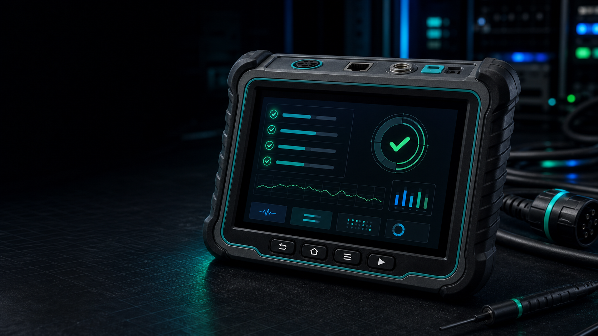

전기차 충전 실패 원인을,
현장에서 바로 좁힌다
P4를 충전기에 EV처럼 연결하면 전기 신호와 ISO 15118 AC 통신 흐름을 한 화면에서 봅니다. 차량·노트북·계측기를 꺼내기 전에, 원인부터 가릅니다.


전기차 충전 실패 원인을,
현장에서 바로 좁힌다
충전기를 EV처럼 물려 전기 신호와 ISO 15118 AC 통신을 한 화면에서. 차량·노트북·계측기를 꺼내기 전에 원인부터 가립니다.
전기차 충전 실패 원인을,
현장에서 바로 좁힌다
충전기를 EV처럼 물려 전기 신호와 ISO 15118 AC 통신 흐름을 한 화면에서 봅니다. 차량·노트북·계측기를 꺼내기 전에, 원인부터 가립니다.
단순 어댑터와 연구소 장비 사이,
비어 있던 현장 진단 구간
P4는 저가 AC 어댑터보다 통신을 더 보여주고, 연구소급 인증 장비보다 가볍고 저렴합니다.
현장에서 원인을 가르는 데 집중한 포지션입니다.

P4 Lite
완속(AC) 현장에서 CP/PWM과 기본 신호를 확인하는 진입 모델입니다. PLC·DC·CAN 기능은 포함하지 않습니다.
단순 AC 어댑터
CP/PP 상태와 AC 안전 확인 중심. 통신 진단·화면·펌웨어 가치는 담기 어렵습니다.
P4 Pro
급속·PLC/ISO 15118 AC 통신을 관측하고 TLS·VAS/BIP 결과까지 리포트합니다.
P4 Max
전 기능(AC/PLC/DC/CAN)과 PC 분석도구·현장 지원까지 아우르는 개발·인증 프로젝트용입니다.
연구소 레퍼런스
CCS·conformance·부하까지 아우르는 상위 시장. P4는 대체가 아니라 훨씬 낮은 비용의 현장 진단입니다.
'충전이 안 된다'는 한 문장을,
읽을 수 있는 원인 후보로
현장에 들어오는 정보는 대개 "충전이 안 된다"는 한 문장입니다.
P4는 이 문제를 CP/PWM, 릴레이·AC 출력, PLC/SLAC/SDP, ISO 15118 AC 단계로 나눠 원인을 좁힙니다.
감이 아니라, 화면과 로그에 남는 데이터로 판단합니다.
실패 원인을 6가지 후보로 분류한다
전기 신호부터 보안 협상, VAS/BIP, 현장 조작까지.
한 장비가 원인 후보를 색으로 갈라 보여줍니다.
제어 신호
CP State A/B/C, PWM duty, K1/K2·AC 출력 조건을 확인해 기본 연결과 상태 전이를 가릅니다.
릴레이 / AC 출력
K1/K2 동작, AC output, 충전 중 C→B 전이 반응을 실시간으로 관찰합니다.
통신 링크
SLAC matched 여부, EVSE MAC, SDP IPv6/port, SDP security(TLS/NoTLS)를 추적합니다.
충전 단계
ChargingStatus, EV SoC, EVSE max current, V2G report, error count를 단계별로 좁힙니다.
보안 / 부가서비스
NoTLS/AUTO/TLS 선택, TLS peer 인증서 정보, ContractCertificate 서비스, Tesla/EV9 VAS 프로필을 결과에 남깁니다.
현장 조작 · 리포트
LCD·터치·로터리, BACK/STOP/RETEST 흐름으로 조작하고, TEST RESULT와 PC 증적 패키지를 남깁니다.

현장에서 확인한 원인을,
다시 볼 수 있는 기록으로
본체가 현장에서 원인을 좁히면, PC 툴체인이 그 순간의 로그·화면·재현 결과를 품질팀과 개발팀이 다시 볼 수 있는 자료로 바꿉니다.
{{ step.desc }}
{{ tool.title }}
{{ tool.desc }}
경쟁 제품 대비 기능 비교
| 기능 | 어댑터급 Fluke · Megger |
P4 | 연구소급 Keysight · Comemso |
|---|---|---|---|
| {{ row.feature }} | |||
| 가격대 | 67만~100만 | 330만~490만 | 수천만원+ |
한 장비에 담은 진단 사양
전기 신호, PLC 통신, ISO 15118 AC 충전 상태, 조작 흐름, 로그를 하나의 러기드 핸드헬드에.
현장 범위에 맞춘 P4 4등급 라인업
{{ pilotNote }}
sample 체험부터 lite·pro 사전예약, max 프로젝트 구성까지 필요한 범위를 선택할 수 있습니다.
P4 Sample
도입 전 기능 체험
P4 Lite
완속 충전 현장 기본 진단
P4 Pro
급속·PLC 현장 원인 분류
P4 Max
개발·인증·현장 지원 프로젝트
P4 Sniffer — 현장 세션을
분석 가능한 증적으로 남긴다
실제 현장에서 발생한 SLAC·SDP·ISO 15118 흐름을 고객사와 공유 가능한 캡처 리포트로 남기는 별도 제품입니다.
상세 동작 구조는 공개 자료가 아니라 프로젝트 환경에 맞춰 별도 안내합니다.
문제가 발생한 순간의 통신 흐름과 타이밍을 파일로 남깁니다.
SLAC, SDP, V2G 단계 중 어디서 멈췄는지 타임라인으로 정리합니다.
캡처 결과를 PC 툴체인에서 열어 화면·로그·리포트로 묶습니다.
현장 증적 확보
고객 현장에서만 재현되는 문제를 로그와 타이밍 자료로 남깁니다.
전 구간 타임라인
SLAC·SDP·ISO 15118 메시지와 타이밍을 실제 값 그대로 저장합니다.
재현·분석 연동
캡처 로그를 PC 툴체인으로 불러와 문제 구간을 다시 재현하고 분석합니다.
P4 본체와 별개로 접수합니다. 2026년 8월 출시 예정이며, 사전신청 순으로 초기 물량을 우선 배정합니다.
Sniffer 사전신청 완료
8월 출시 일정에 맞춰 담당자가 개별 안내드립니다. 감사합니다.
사전예약으로
초기 물량을 확보하세요
{{ pilotNote }}
충전기 제조사·운영사·시험 기관·설치 현장, 어떤 환경이든 담당자가 구성과 일정을 함께 잡아드립니다.
사전예약이 접수되었습니다
담당자가 영업일 기준 1~2일 내 연락드립니다. 감사합니다.